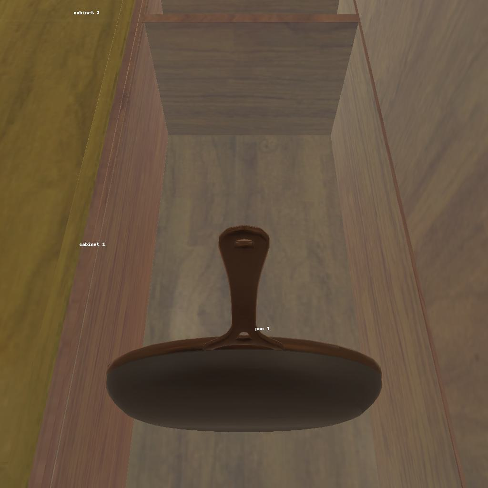

---------------------------------------------------------task: 17---------------------------------------------------------
--------------------------------------------------------------------------------------------------------------------------------------------------------------------
--------------------------------------------------------------------------------------------------------------------------------------------------------------------
Step:--------------------------------------------------------------------------18-------------------------------------------------------------------------------
----------------------------------------
VLM Prompt:
Image1:
Image2:
**Instruction**
1. Analyze the provided image to identify all visible household objects, focusing on those relevant to the task description "cool some pan and put it in stoveburner."
2. Use the analysis of the image and the task hint "The agent must find an object of the desired type, pick it up, go to a fridge, cool the object with the fridge, then find the correct location to place it, and put it down there. The agent does not need to use the fridge button or open the fridge to cool the object, and the agent just needs to do action that is "cool the object with the fridge"." to answer the question: what is the most reasonable action in the choices for the task description "cool some pan and put it in stoveburner"?
4. Decide and write the answer using the template: The answer is: (i): , where i is the real number. If there is no desired object in the image, search every place based on **Initial Observation** to find the object. And if no one is exactly correct, choose a similar answer.
**Initial Observation**
You are in the middle of a room. Looking quickly around you, you can see cabinet (1-14), countertop (1-2), microwave (1), drawer (1-5), sink (1), sinkbasin (1), coffeemachine (1), stoveburner (1-4), toaster (1), fridge (1), diningtable (1), garbagecan (1), safe (1)
**Answer Choices**
(1): go to cabinet 1
(2): go to cabinet 3
(3): go to countertop 1
(4): go to cabinet 4
(5): go to cabinet 5
(6): go to microwave 1
(7): go to cabinet 6
(8): go to drawer 1
(9): go to drawer 2
(10): go to drawer 3
(11): go to cabinet 7
(12): go to cabinet 8
(13): go to sink 1
(14): go to sinkbasin 1
(15): go to coffeemachine 1
(16): go to cabinet 9
(17): go to cabinet 10
(18): go to drawer 4
(19): go to cabinet 11
(20): go to stoveburner 1
(21): go to stoveburner 2
(22): go to stoveburner 3
(23): go to stoveburner 4
(24): go to cabinet 12
(25): go to toaster 1
(26): go to drawer 5
(27): go to countertop 2
(28): go to fridge 1
(29): go to cabinet 13
(30): go to cabinet 14
(31): go to diningtable 1
(32): go to garbagecan 1
(33): go to safe 1
(34): close cabinet 2
(35): put pan 1 in/on cabinet 2
(36): examine pan 1
(37): examine cabinet 2
**Answer**
Let's think step by step by following the instructions.
----------------------------------------
----------------------------------------
Original Response:
First, we need to identify the pan to cool it and then put it in the stoveburner. In the images provided, we can see "pan 1" which is the object we need for the task. The next step is to cool the pan with a fridge. We don't have to open the fridge or press any buttons; we just need to perform the action that implies cooling the pan with the fridge. Lastly, we need to find a stoveburner to place the cooled pan.
Based on the Initial Observation, we can see that the "fridge (1)" is mentioned, which is where we will cool the pan. After that, we need to put it in a stoveburner, and there are four stoveburners mentioned (stoveburner 1-4).
Since the pan is already in our possession from the images (it's labeled "pan 1"), we don't need to go to a cabinet to get it. Therefore, the next reasonable action would be to cool it in the fridge and then place it on a stoveburner.
The answer is: (28): go to fridge 1, to cool the pan, and then (20): go to stoveburner 1 to put the pan in the stoveburner.
----------------------------------------
----------------------------------------
>>> Refine Original VLM Response and Get Pure Action: go to fridge 1, to cool the pan, and then (20): go to stoveburner 1 to put the pan in the stoveburner
----------------------------------------
-----------------------------------------------------------------
Running time: 12.667969703674316 seconds
Total Money: 8.384370000000002
-----------------------------------------------------------------
-----------------------------------------------------------------
Text Observation:Nothing happens.
-----------------------------------------------------------------
UNSUCCEED